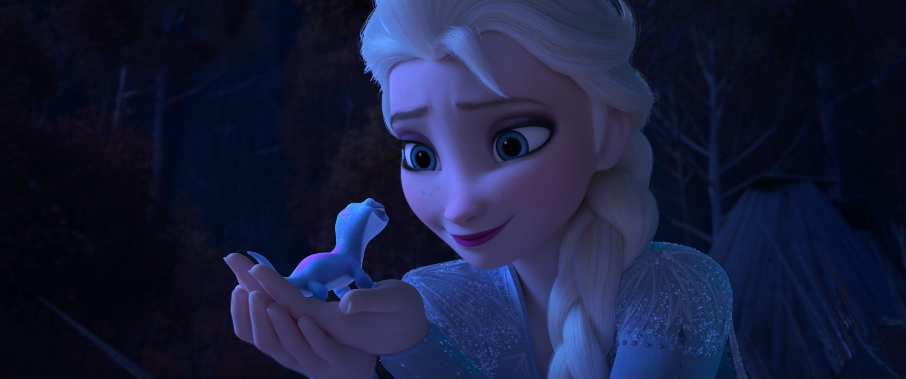

《冰雪奇缘》的「魔法」并非单一设定，而是一个由元素之灵 → 第五灵 → 个体天赋层层嵌套的体系。本页作为魔法卷的导读，把零散的子条目（冰雪魔法、记忆之水、四大元素、第五灵、地精法术等）整合为一张可把握的地图；各子页有更细的考据与出处。
"资料来源：官方电影《Frozen》(2013) / 《Frozen II》(2019)、艺术设定集《The Art of Frozen》《The Art of Frozen II》、官方电影小说《Frozen Junior Novel》《Frozen 2 Deluxe Junior》，以及授权衍生小说《Dangerous Secrets》《Forest of Shadows》《Conceal, Don't Feel》《Polar Nights》《All Is Found》。
| 层级 | 代表 | 性质 | 来源 |
|---|---|---|---|
| 元素之灵（四灵） | 风·盖尔 / 土·地巨灵 / 火·布鲁尼 / 水·诺克 | 自然之力的人格化，亘古存在于魔法森林 | 《Frozen II》正片 / 设定集 |
| 第五灵 | 艾莎 | 沟通「人」与「自然之灵」的桥梁，由北境血脉与人类王室联姻开启 | 《Frozen II》正片 |
| 个体天赋魔法 | 艾莎的冰雪魔法、地精的记忆修改 | 集中于个别角色，可习得、可失控、可传承 | 正片 + 衍生小说补完 |
核心设定：艾莎之所以成为第五灵，是因为母亲伊杜娜（Northuldra 出身）幼年救下阿格纳尔这一「无私之举」被森林精灵选中，使长女获得魔法天赋——这是「人类与自然的联姻」在血脉上的落地（详见第五灵、伊杜娜与阿格纳尔）。
艾莎的魔法并非静态，而是随情绪与自我认知演化：
衍生小说进一步补完了边界：《Dangerous Secrets》写她幼时魔法已能赋活雪人雏形；《Polar Nights》写她可从阿塔霍兰提取「记忆冰影」实体化给安娜看——但潜得太深会被冻结（「走得太远」的代价，见记忆之水、太深之险）。
"魔法在《冰雪奇缘》里既是超能力，也是隐喻：艾莎的冰雪是「恐惧与自我接纳」的外化，四灵是「自然之力」，第五灵是「人与自然的和解」—— 三者共同构成全系列的主题骨架（延伸至[主题卷](/vol5-themes/)）。
"本页为总论性导读，具体设定与出处请跳转各子条目。衍生小说自创的魔法细节（如 draugr）未必与正片一致，已按本百科编辑口径单独标注。
